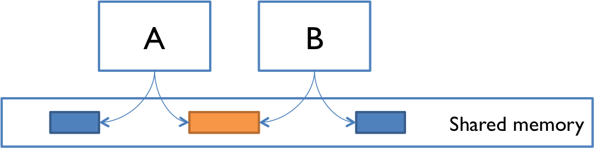
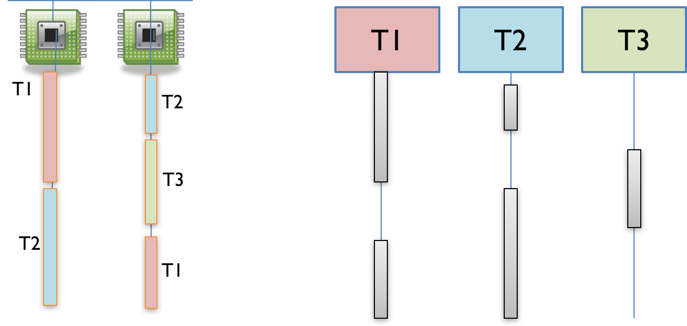
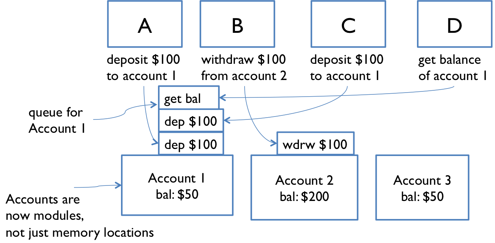

This is an easy-to-understand note for [Reading 19: Concurrency][1].
Exercises are very important, do not skip them. On the contrary, you can read this article in an exercises-driven way if you just want to review the key ideas.
Concurrency
Real-life examples:
- Multiple computers in a network
- Multiple applications running on one computer
- Multiple processors in a computer(today, often multiple processor cores on a single chip)
In modern programming:
- Websites must handle multiple simultaneous users.
- Mobile apps need to do some of their processing on servers(“in the cloud”).
- Graphical user interfaces almost always require background work that does not interrupt the user. (For example, Eclipse compiles your Java code while you’re still editing it.)
Processor clock speeds are no longer increasing. Instead, we’re getting more cores with each new generation of chips.
Two modules for concurrent programming
Shared memory
Examples:
| A&B | Environment | Sharing Objects |
|---|---|---|
| two processors(or processor cores) | the same computer | the same physical memory |
| two programs | the same computer | a common filesystem |
| two threads | the same Java program | the same Java objects |
Memory passing
Concurrent modules send off messages through a communication channel, and incoming messages to each module are queued up for handling. Examples include:
| A&B | Environment | Communication |
|---|---|---|
| two computers | network | network connections |
| web browser and web server | network | A opens a connection; B sends the web page data to A’s asks |
| instant messaging client and server | ||
| ls grep | terminal | pipe |
Processes, threads, time-slicing
If you have read [CSAPP][2], this section can be ignored.
Modules A and B above can be: processes and threads.
Process
A process is an instance of a running program that is isolated from other processes on the same machine. In particular, it has its own private section of the machine’s memory.
Thread
A thread is a locus of control inside a running program. Think of it as a place in the program that is being run, plus the stack of method calls that led to that place (so the thread can go back up the stack when it reaches return statements).
Time-slicing
How can I have many concurrent threads with only one or two processors in my computer? When there are more threads than processors, concurrency is simulated by time slicing, which means that the processor switches between threads. The figure above shows how three threads T1, T2, and T3 might be time-sliced on a machine that has only two actual processors. In the figure, time proceeds downward, so at first, one processor is running thread T1 and the other is running thread T2, and then the second processor switches to run thread T3. Thread T2 simply pauses, until its next time slice on the same processor or another processor.
On most systems, time slicing happens unpredictably and nondeterministically, meaning that a thread may be paused or resumed at any time.
Starting a thread in Java
Using Thread
// ... in the main method: |
Using anonymous class:
new Thread(new Runnable() { |
If you’re feeling clever, you can go one step further with Java’s [lambda expressions][3]:
new Thread(() -> System.out.println("Hello from a thread!")).start(); |
Runnable is a functional interface, the interface that contains one and only one abstract method run().
The Arrow operator -> divides the lambda expressions in two parts:
() -> System.out.println("Hello from a thread!") |
The left side specifies the parameters required by the expressions, which could also be empty if no parameters are required.
The right side is the lambda body which specifies the actions of the lambda expression.
It might be helpful to think about -> as “becomes”.
Another example:
interface MyGreeting { |
More: [parameter type, blocks, generic, etc][3].
Shared memory example
The point of this example is to show that concurrent programming is hard because it can have subtle bugs.

Simplify the bank down to a single account, with a dollar balance stored in balance variable, and two operations deposit and withdraw that simply add or remove a dollar:
// suppose all the cash machines share a single bank account |
Each transaction is just a one dollar deposit followed by a one-dollar withdrawal, so it should leave the balance in the account unchanged. Throughout the day, each cash machine in our network is processing a sequence of deposit/withdraw transactions:
// each ATM does a bunch of transactions that |
So at the end of the day, regardless of how many cash machines were running, or how many transactions we processed, we should expect the account balance to still be 0.
But if we run this code, we discover frequently that the balance at the end of the day is not 0. If more than one cashMachine() call is running at the same time – say, on separate processors in the same computer – then balance may not be zero at the end of the day. Why not?
Interleaving
Suppose two cash machines, A and B, are both working on a deposit at the same time. Here’s how the deposit() step typically breaks down into low-level processor instructions:
| A | B |
|---|---|
| A get balance (balance=0) | |
| A add 1 | |
| A write back the result (balance=1) | |
| B get balance (balance=1) | |
| B add 1 | |
| B write back the result (balance=2) |
This interleaving is fine. We end up with balance 2, so both A and B successfully put in a dollar.
| A | B |
|---|---|
| A get balance (balance=0) | |
| B get balance (balance=0) | |
| A add 1 | |
| B add 1 | |
| A write back the result (balance=1) | |
| B write back the result (balance=1) |
This balance is now 1. A’s dollar was lost! A and B both read the balance at the same time, computed separate final balances, and then raced to store back the new balance, which failed to take the other’s deposit into account.
Race condition
A race condition means that the correctness of the program(the satisfaction od postconditions and invariants) depends on the relative timing of events in concurrent computations A and B. When this happens, we say “A is in a race with B”.
Some interleavings of events may be OK, in the sense that they are consistent with what a single, nonconcurrent process would produce; but other interleavings produce wrong answers, which violates postconditions or invariants.
Tweaking the code won’t help
All these versions of the bank-account code exhibit the same race condition.
// version 1 |
Even simple statements can translate into multiple steps by the virtual machine.
The key lesson is that you can’t tell by looking at an expression whether it will be safe from race conditions.
Reordering
Here’s an example. Note that it uses a loop that continuously checks for a concurrent condition; this is called busy waiting and it is not a good pattern. In this case, the code is also broken:
private boolean ready = false; |
Looking at the code, answer is set before ready is set, so once useAnswer sees ready as true, then it seems reasonable that it can assume that the answer will be 42, right? Not so.
The problem is that modern compilers and processors do a lot of things to make the code fast. One of those things is making temporary copies of variables like answer and ready in faster storage (registers or caches on a processor), and working with them temporarily before eventually storing them back to their official location in memory. The storeback may occur in a different order than the variables were manipulated in your code. Here’s what might be going on under the covers (but expressed in Java syntax to make it clear). The processor is effectively creating two temporary variables, tmpr and tmpa, to manipulate the fields ready and answer:
private void computeAnswer() { |
Exercies
Interleaving 1
public class Moirai { |
Possible running results
spinning |
measuring |
The third thread is never started, so cutting will never be printed.
The order of the other outputs depends on whether the first thread runs println before or after the second.
Interleaving 2
public class Parcae { |
Running results
spinning |
There is only one thread running in this program, and only one possible output.
Race conditions
private static int x = 1; |
Now suppose methodA and methodB run concurrently, so that their instructions might interleave arbitrarily. Which of the following are possible final values of x?
Possible running results
5 6 10 30Message passing example
Accounts are modules just like machine modules. Incoming requests form a queue waiting for handling.
Message passing doesn’t eliminate the possibility of race conditions. Suppose each account supports get-balance and withdraw operations with corresponding messages.
As shown above, two users at machines A and B, are both trying to withdraw a dollar if the account holds more than a dollar.
get-balance() |
Interleaving: the messages sent to the bank account rather than the instructions executed by A and B.
| Interleaving of messages will fool A and B into thinking they can both withdraw a dollar, thereby overdrawing the account |
|---|
| A sends a message and gets the reply: “balance >= $1, it’s OK to withdraw 1 dollar” |
| B sends a message and gets the reply: “balance >= $1, it’s OK to withdraw 1 dollar” |
| A start withdraw |
| B start withdraw |
| Oops, both A and B are fooled! |
Concurrency is hard to test and debug
It’s very hard to discover and localize race conditions using testing.
-
Poor reproducibility
-
Bugs are heisenbugs(non-deterministic and hard to reproduce, as opposed to bohrbugs)
It may even disappear when you try to look it with
printlnordebugger!
Reason: Printing and debugging are 100-1000x slower than other operations so that they dynamically change the timing of operations, and the interleaving.For example, insert
printlnin thecashMachine():private static void cashMachine() {
for (int i = 0; i < TRANSACTIONS_PER_MACHINE; ++i) {
deposit(); // put a dollar in
withdraw(); // take it back out
System.out.println(balance); // makes the bug disappear!
}
}… and suddenly the balance is always 0, as desired.
Over the next several readings, we’ll see principled ways to design concurrent programs so that they are safer from there kinds of bugs.
Summary
- Concurrency: multiple computations running simultaneously
- Shared-memory & message-passing paradigms
- Processes & threads
- Process is like a virtual computer; thread is like a virtual processor
- Race conditions
- When correctness of result (postconditions and invariants) depends on the relative timing of events
Recall three key properties of good software, we need to fix these problems:
-
Safety from bugs: Concurrency bugs are some of the hardest bugs to find and fix, and repair careful design to avoid.
-
Easy to understand: Predicting how concurrent code might interleave with other concurrent code is very hard for programmers to do. It’s best to design your code in such a way that programmers don’t have to think about interleaving as all.
-
Ready for change: Not particularly relevant here.
References
- [Reading 19: Concurrency | 6.031: Software Construction][1]
- [CSAPP][2]
- [How to start working with Lambda Expressions in Java][3]
[1]: http://web.mit.edu/6.031/www/sp17/classes/19-concurrency/
[2]: http://csapp.cs.cmu.edu/
[3]: https://medium.freecodecamp.org/learn-these-4-things-and-working-with-lambda-expressions-b0ab36e0fffc